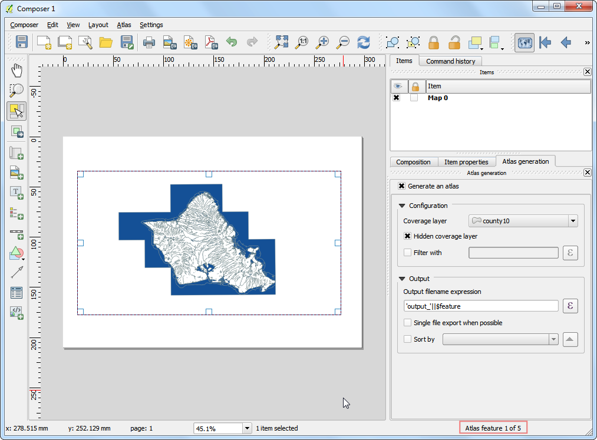
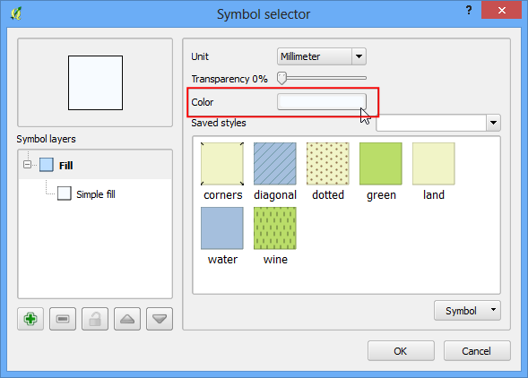
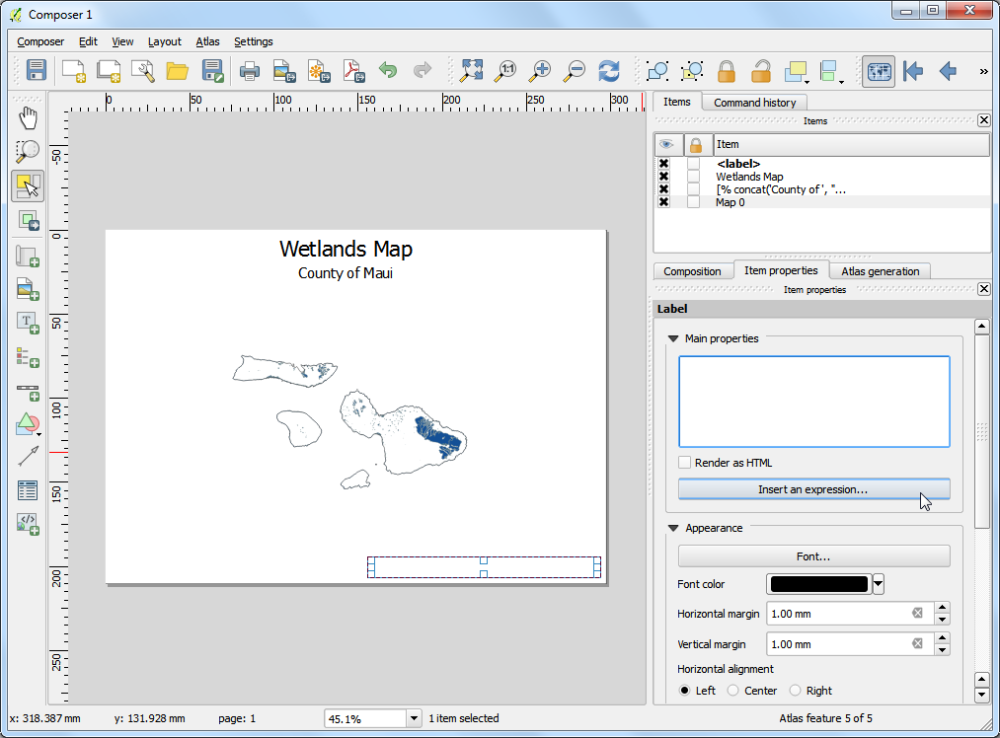
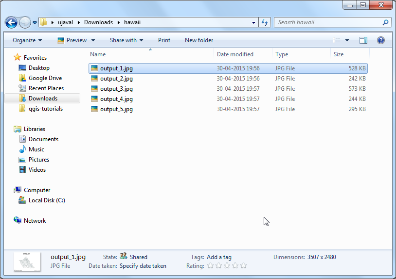
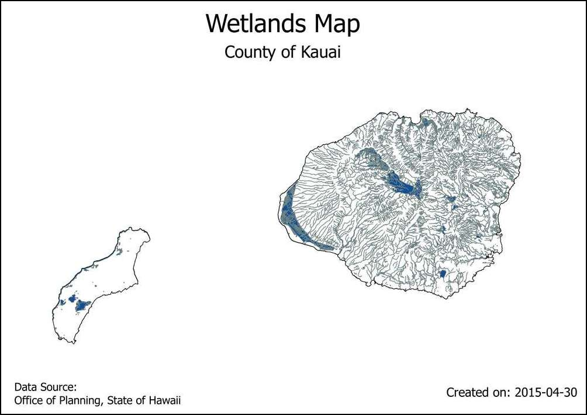

Maken van kaarten automatiseren met Atlas van Printvormgeving
[ Download PDF
A4
Letter ]
Als uw organisatie afgedrukte of kaarten online publiceert, zult u vaak kaarten maken met dezelfde sjabloon - gewoonlijk één voor elke administratieve eenheid of interessegebied. handmatig maken van deze kaarten kan veel tijd vergen en als u deze op ene regelmatige basis wilt bijwerken, zou het een nare klus kunnen worden. QGIS heeft een gereedschap Atlas dat u kan helpen een kaartsjabloon te maken en eenvoudig een groot aantal kaarten te publiceren voor verschillende geografische regio’s. Als u nog niet bekend bent met de basis van Printvormgeving, bekijk dan de handleiding Een kaart maken.
Overzicht van de taak
Deze handleiding geeft weer hoe een kaart voor ‘wetlands’ te maken voor elke county in de staat Hawaii.
Andere vaardigheden die u zult leren
Hoe de stijlrenderer Geïnverteerde polygonen te gebruiken om gebieden te vullen buiten polygonen.
Hoe ene expressie te gebruiken in de stijlrenderer Op regel gebaseerd om alleen het huidige object weer te geven in Atlas.
Expressies toepassen om dynamische labels te maken in Printvormgeving.
Procedure
Start QGIS en ga naar .

Blader naar het bestand HI_Wetlands.shp.zip en klik op Open.

Selecter de laag HI_Wetlands_Poly en klik op OK.

U zult de polygonen zien die de ‘wetlands’ weergeven in de gehele staat Hawaï. Omdat we afzonderlijke kaarten willen maken voor elke county in de staat, hebben we laag met grenzen van de counties nodig. Ga naar en blader naar het bestand county10.shp.zip. Klik op Open.

Ga naar .

Laat het veld voor de titel van de printvormgeving leeg en klik op OK.

Ga naar .

Sleep een rechthoek met de muis, terwijl u de linker muiksnop ingedrukt houdt, waar u de kaart wilt invoegen.

Scroll naar beneden op de tab Item-eigenschappen en selecteer het vak beheerd door atlas. Dit geeft aan de printvormgeving aan dat het bereik dat wordt weergegeven in dit item zal worden bepaald door het gereedschap Atlas.

Schakel naar de tab Atlas-generatie. Selecteer het vak Genereer een atlas. Selecteer de laag county10 als de Bedekkingslaag. Dit zal aangeven dat we 1 kaart willen maken voor elk object polygoon op de laag county10. U kunt ook Verborgen bedekkingslaag selecteren zodat de objecten zelf niet op de kaart zullen verschijnen.

Het zal u opvallen dat de kaart niets is gewijzigd na het configureren van de instellingen voor Atlas. Ga naar .

Nu zult u zien dat de kaart zich zal vernieuwen en weergeven hoe de individuele kaarten eruit zullen komen te zien. Merk op dat het het huidige nummer van het object uit de bedekkingslaag weergeeft in de rechter benedenhoek.

U kunt voorbeelden zien van hoe de kaart eruit zal zien voor elk van de polygonen van de counties. Ga naar .

Atlas zal de kaart renderen tot het bereik van het volgende object op de bedekkingslaag.

Laten we een label toevoegen aan de kaart. Ga naar .

Klik, op de tab Item-eigenschappen, op de knop Voeg een expressie in....

Het label van de kaart kan de attributen gebruiken uit de bedekkingslaag. De functie concat wordt gebruikt om meerdere tekstitems samen toe voegen tot één enkel tekstitem. In dit geval zullen we de waarde van het attribuut NAME10 op de laag county10 samenvoegen met County. Voeg een expressie zoals die hieronder in een klik op OK.
concat('County of ', "NAME10")
Pas het lettertype aan naar uw wensen.

Voeg nog een ander label toe en voer Wetlands-kaart in onder de Algemene eigenschappen. Omdat hier geen expressie is zal deze tekst hetzelfde zijn op alle kaarten.

Ga naar en verifieer dat de labels op de kaart werken zoals bedoeld. het zal u opvallen de kaart met wetlands polygonen heeft die zich uitstrekken tot in de oceaan, wat er lelijk uitziet. We kunnen de stijl wijzigen zodat de gebieden buiten de grenzen van de counties worden verborgen.

Schakel naar het hoofdvenster van QGIS. klik met rechts op de laag county10 en selecteer Eigenschappen.

Selecteer, op de tab Stijl, de renderer Geïnverteerde polygonen. Deze renderer maakt het gebied buiten de polygoon op - niet er binnen. Selecteer wit als de vulkleur en klik op OK.

Schakel naar het venster van Printvormgeving. Indien we het effect van de geïnverteerde polygonen willen weergeven, moeten we het vak Verborgen bedekkingslaag onder Atlas-generatie deselecteren. U zult zien dat de gerenderde afbeelding schoon is en dat de gebieden buiten de polygonen niet zichtbaar zijn.

er is echter één probleem. U ziet gebieden van de kaart die buiten grens van de bedekkingslaag liggen, maar nog steeds zichtbaar zijn. Dat komt omdat Atlas niet automatisch andere objecten verbergt. Dit kan in sommige gevallen nuttig zijn, maar voor ons doel willen we alleen de wetlands weergeven van de county waarvan de kaart wordt gegenereerd. Schakel, om dit op te lossen, terug naar het hoofdvenster van QGIS en klik met rechts op de laag county10 en selecteer Eigenschappen.

Selecteer, op de tab Stijl, de renderer Regel-gebaseerd als de Sub renderer. Dubbelklik op het gebied onder Regel.

Klik op de knop ... naast Filter.

Vergroot, in de Expressiebouwer, de de functiegroep Atlas. De functie $atlasfeatureid zal het huidige geselecteerde object teruggeven. We zullen een expressie bouwen die alleen het huidige geselecteerde object in Atlas selecteert. Voer de expressie in zoals hieronder:

Klik, terug in het venster van Printvormgeving, op de knop Voorvertoning bijwerken op de tab Item-eigenschappen om de wijzigingen te zien. Merk op dat nu alleen het gebied wordt weergegeven dat de grenzen van de county bedekt.

We zullen nu nog ene ander dynamisch label toevoegen om de huidige datum weer te geven. Ga naar en selecteer het gebied op de kaart. Klik op de knop Voeg een expressie in.

Vergroot de functiegroep Datum en tijd en u zult de functie $now zien. Die bevat de huidige systeemtijd. De functie todate() zal deze converteren naar een tekenreeks voor een datum. Voer de expressie in zoals hieronder:
concat('Created on: ', todate($now))

Voeg nog een ander label toe dat de bron aanhaalt. U kunt ook nog andere kaartelementen, zoals een Noordpijl, schaalbalk etc., toevoegen, zoals beschreven in de handleiding Een kaart maken.

Als u tevreden bent met de lay-out van de kaart, ga naar .

Selecteer een map op uw computer en klik op Choose.

Het gereedschap Atlas zal nu over elk object in de bedekkingslaag gaan een een afzonderlijke kaartafbeelding maken, gebaseerd op de sjabloon die we hebben gemaakt. U kunt de afbeeldingen in de map bekijken als het proces is voltooid.

Hier zijn, als verwijzing, de kaartafbeeldingen.


